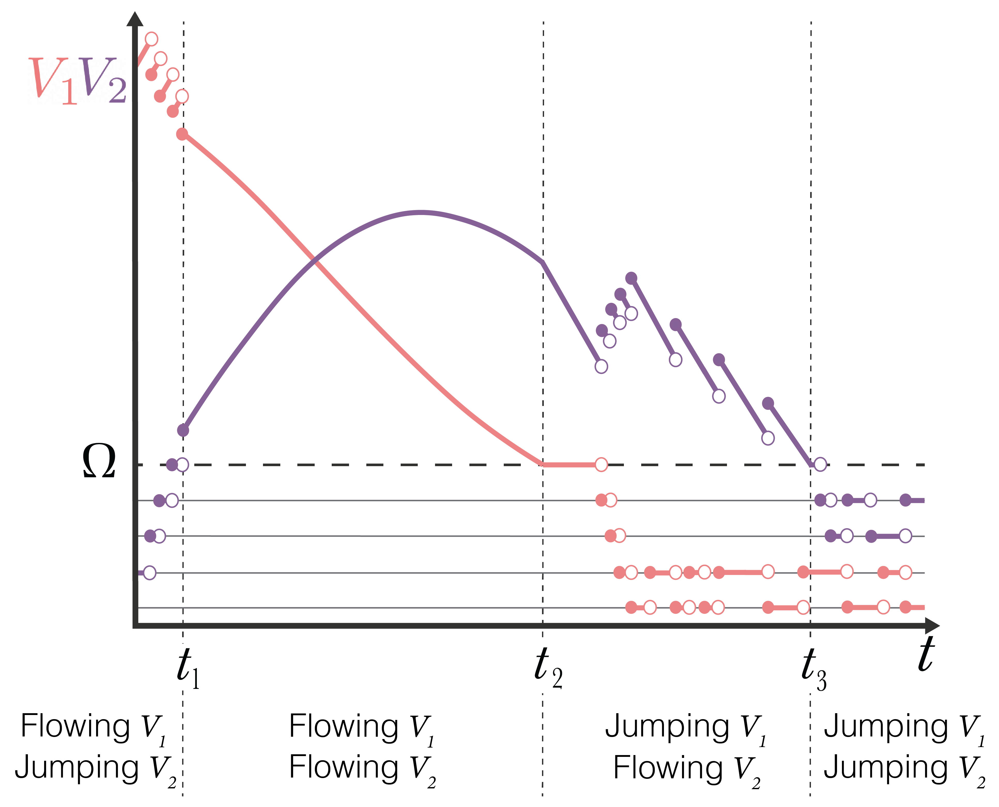

JSF Mathematical Framework¶
To couple both the stochastic (Jumping) and deterministic (Flowing) compartments, we model each compartment as to where they are in state space.
Consider a compartmental model with \(n\) compartments \(\vec{V} = \left\{ V_i\right\}_{i=1}^n\), where \(V_{i}(t)\) represents the value of the \(i\) th compartment at time \(t\). For example, \(V_i\) could be the number of people infected with a pathogen, or the copy number of a molecule in a cell. The state variables \(V_i\) may take values from different domains depending upon the resolution needed for the model. For example, in an ODE, \(\vec{V}\) will have real values and in a CTMC \(\vec{V}\) might have integer values.
Typically, discrete values are used to represent small populations, while larger populations will be represented with a continuum. To accommodate both scales, we model the domain of \(V_{i}\) as \(\mathcal{V}_{\Omega_i}=\{0,1,\ldots,\Omega_{i}\}\cup(\Omega_{i},\infty)\). The switching threshold parameter, \(\Omega_i\in \mathbb{Z}_{\geq 0}\), is where the \(i\) th compartment transitions from discrete to continuous dynamics. If a compartment \(V_{i}\) has a value in \(\{0,1,\ldots,\Omega_{i}\}\), we call it “discrete” (or “jumping”), and if it has a value in \((\Omega_{i},\infty)\), we call it “continuous” (or “flowing”). While the switching threshold can be compartment specific, for ease of exposition, we will only consider a single threshold shared between all compartments \(\Omega = \Omega_i\). At any moment in time let us assume \(q\) of the \(n\) compartments are flowing. We use the notation \(\vec{V}_F = \left\{ V_i: V_i>\Omega \right\} \in (\Omega,\infty)^q\) and \(\vec{V}_J = \left\{ V_i: V_i\leq \Omega \right\} \in \left\{0, 1, \ldots, \Omega \right\}^{(n-q)}\) to represent the compartments in each of the flowing and jumping states, respectively.
The dynamics of each compartment \(V_i\) are described by a set of \(m\) “reactions” \(\mathcal{R} = \left\{\mathcal{R}_k \right\}_{k=1}^m\). Each reaction \(\mathcal{R}_k\) is defined by two properties: the rate (per unit time) at which it occurs, \(\lambda_{k}\), which may be (and usually is) a function of the state \(\vec{V}\); and the effect on the state, i.e. the change \(\eta_{ik}\) to the size of compartment \(V_i\) when reaction \(\mathcal{R}_k\) occurs. As a matrix, \(\eta\in \mathbb{Z}^{n,m}\) is referred to as the “stoichiometric matrix”. For ODE models, these reactions occur continuously and are written in the form
while for CTMC models, reactions in the system \(\mathcal{R}\) occur as discrete events. In the later case, each reaction \(\mathcal{R}_k\) has a separate propensity described by \(\lambda_k(\vec{V})\), this propensity remains constant between events but when an event \(\mathcal{R}_k\) occurs, there is a change in \(\vec{V}\) (as specified by the elements of \(\eta_{\cdot k}\)) and therefore in \(\vec{\lambda}(\vec{V})\).
We define the subset of reactions \(\mathcal{S}\subseteq \mathcal{R}\) to contain those treated as stochastic events. We define \(\mathcal{S}\), which we use throughout this manuscript, captures a larger set of reactions; \(\mathcal{S} = \left\{\mathcal{R}_k:\exists i \text{ s.t. } V_i\in\vec{V}_J \text{ and } \left(\eta_{ik}\neq 0 \text{ or } \partial_{V_i}\lambda_k \neq 0\right) \right\}\). In this definition, a reaction is included in \(\mathcal{S}\) if either (1) it causes a change in jumping (discrete) populations textit{or} (2) it is influenced by a discrete population (perhaps as reactants for example).
Reactions in \(\mathcal{S}\) are simulated using stochastically sampled times similar to CTMC models. It is important to note that, unlike time homogeneous CTMC models, the propensities are not constant because the state \(\vec{V}\) (and therefore \(\vec{\lambda}\)) are continuously varying. When any reaction \(\mathcal{R}_k\in\mathcal{S}\) occurs, we say the system has “jumped” and an instantaneous change of \(\eta_{ik}\) for each compartment \(V_i\) occurs (irrespective of whether \(V_i\in\vec{V}_J\) or \(V_i\in\vec{V}_F\) to ensure mass conservation is observed). We will refer therefore to reactions in \(\mathcal{S}\) as “jumps”. The reactions in \(\mathcal{S}'=\mathcal{R}\setminus \mathcal{S}\) are not stochastic, we call these “flows” because they represent the continual change of value of the relevant compartments, all of which are continuous by definition of \(\mathcal{S}'\). At any moment in time, we denote \(|\mathcal{S}'| = p = m - |\mathcal{S}|\) to be the number of reactions which are flowing.
Finally, the hybrid model that we propose is capable of “switching”. Switch events are defined as a compartment between \(\vec{V}_F\) and \(\vec{V}_J\). These events occur when a compartment’s value crosses the switching threshold \(\Omega\). Importantly, switch events can change \(\mathcal{S}\) and are paradigm defining events which should occur infrequently compared to jumps (frequent) and flows (continuous).
Due to the way that \(\mathcal{R}\) is partitioned, it is possible to order the rows and columns of \(\eta\) at any moment into the upper-triangular block form
where \(\eta_{\mathcal{S}'} \in \mathbb{Z}^{q\times p}\), \(\eta_{\mathcal{S}} \in \mathbb{Z}^{(n-q)\times (m-p)}\) and \(\bar{\eta}_{\mathcal{S}} \in \mathbb{Z}^{q\times (m-p)}\) refer to stoichiometric coefficients for changes in flowing compartments under flows, jumping compartments under jumps, and flowing compartments under jumps, respectively. Written as a system of equations analogous to the above ODE equation, the hybrid JSF model we propose formally takes the following form. For any time interval \(t_0<t<t_1\) between switching events,
where \(\vec{\lambda}_{\mathcal{S}'}\in\mathbb{R}^p\) are the reaction rates of flows and \(\vec{\Lambda}_{\mathcal{S}}\) is a stochastic vector of \(m-p\) delta-function spike trains that are derived from the realisations of \(m-p\) different jumps sampled at rates which are dependent on the dynamic changes in the propensities \(\vec{\lambda}_{\mathcal{S}}\in\mathbb{R}^{m-p}\) for these jumps.
The below figure shows how it is possible for a variable to switch between flowing and jumping regimes for the previously described Lotka-Volterra model. When a flowing variable decreases to \(\Omega\), it switches to jumping and we consider it a discrete variable. When a jumping variable jumps from \(\Omega\) to \(\Omega+1\) it switches to flowing and we consider it to be a continuous variable.
{kind=link}
For \(t< t_1\), \(V_2\) is jumping, and \(V_1\) is flowing. Since \(V_2\) is jumping, the conversion of \(V_1\) into \(V_2\) (\(\mathcal{R}_3\)) is a jump, and as a result jump increases in \(V_2\) due to \(\mathcal{R}_3\) correspond to jump decreases in \(V_1\). On the other hand, the only flow in the system is that of \(\mathcal{R}_1\), the birth of \(V_1\) which can be seen as continuous increases in \(V_1\) between jumps. We also note that \(\mathcal{R}_2\) (the death events of \(V_2\)) is also jumping. However, for \(t < t_1\), we do not observe this reaction occurring. At \(t=t_1\), \(V_2 > \Omega\), and both \(V_1\) and \(V_2\) are flowing. The model therefore behaves according to the ODE model with an initial condition prescribed at \(t=t_1\). At \(t=t_2\), \(V_1\) drops below \(\Omega\), and therefore switches to jumping. The conversion of \(V_1\) to \(V_2\) (\(\mathcal{R}_3\)) again become jumps. In the regime following \(t=t_2\) the only flow is \(\mathcal{R}_2\) (the death events of \(V_2\)) and so between \(\mathcal{R}_3\) events, exponential decay of \(V_2\) is taking place. It is also possible to see \(\mathcal{R}_1\) (births of \(V_1\)) occur in this regime as independent jump increases in \(V_1\) that do not change \(V_2\). Finally, at \(t=t_3\), \(V_2\) also drops below \(\Omega\) so therefore also switches to jumping. In this case, all compartments are jumping and therefore beyond \(t_3\) the hybrid model reduces to a CTMC.
To implement JSF, we require three event types: jump events, flow events, and switch events, which will be described in the following sections.
Jump Events¶
The reactions that are defined in \(\mathcal{S}\) are stochastic events that produce discontinuous jumps in the state vector \(\vec{V}\). In the above JSF equation, we denote the jumps using the notation \(\vec{\Lambda}_{\mathcal{S}}(\vec{V})\). Each element in the vector \(\vec{\Lambda}_{\mathcal{S}}\) corresponds to a reaction in \(\mathcal{S}\). Consider, for example, \(\mathcal{S}_K\) the \(K\) th reaction in \(\mathcal{S}\) and we shall suppose that this reaction corresponds to the \(k\) th reaction in the full model \(\mathcal{S}_K = \mathcal{R}_k\). The \(K\) th element of \(\vec{\Lambda}_{\mathcal{S}}\) is
where \(\delta\) is the Dirac measure and \(t_{k}^{(e)}`\) is the \(e\) th time at which the jump event \(\mathcal{R}_k\) takes place. In this way, the term \(\vec{\Lambda}_{\mathcal{S}}\) the JSF equation manifests as discrete jumps in both \(\vec{V}_F\) and \(\vec{V}_J\) at the moments of each jump event. For the sake of the simulation, the computation of the jump times \(t_{k}^{(e)}\) for each instance \(e\) of each reaction \(\mathcal{R}_k\in \mathcal{S}\) is all that is required. The stoichiometric coefficients present in the JSF equation then indicate the amplitude of the jumps in each compartment.
The instantaneous propensity for a jump associated with reaction \(\mathcal{R}_k\) is \(\lambda_k(\vec{V})\). We note that this propensity \(\lambda_k(\vec{V})\) is likely to change with time even between jumps due to the continuous change caused by flows.
We use a variant of the Next Reaction Method (NRM) to sample jump times. We first note that the propensity for a jump is dependent only on the instantaneous state \(\vec{V}\), and therefore if at a current time \(t_0\) there has been \(e-1\) jumps associated with reaction \(\mathcal{R}_k\), it has no bearing on the distribution of the time \(t_k^{(e)}\), and therefore we shall simply denote \(t_k^{(e)} = t_k\) as the next jump time for reaction \(\mathcal{R}_k\). The cumulative probability function from which \(t_k\) is sampled is dependent on the current time \(t_0\) and the evolution of the state variables in time \(\vec{V}(t)\). In particular, \(\text{CDF}(t;k) = 1 - \exp\left\{- \int_{t_{0}}^{t} \lambda_{k}(\vec{V}(s)) ds \right\}\). To sample \(t_k\), inverse transform sampling is used. Specifically, we first sample \(u_{k}\sim\text{Unif(0,1)}\) and then solve \(\text{CDF}(t_k;k) = u_k\) for \(t_k\). We define \(J_k(t)`\) as the “jump clock” for reaction \(\mathcal{R}_k\), noting that \(u_k\) and \(1-u_k\) have the same distribution:
In general, we cannot solve directly for \(t_k\). Instead, we solve for it numerically by tracking the value of \(J_k(t)\) as \(\vec{V}\) evolves through flows, jumps and switches. For each reaction \(\mathcal{R}_k\), at some initial time (for example \(t_k^{(e-1)}\)) we sample \(u_k\) and initialise \(t_0 = t_k^{(e-1)}\). The initial value of \(J_k(t)\) is therefore equal to the positive number \(\log(u_{k}^{-1})\). As time progresses, \(J_k(t)\) decreases according to the above equation since \(\lambda_k\geq 0\). Its value ‘ticks’ down to zero over time and when \(J_k\) reaches \(0\), a jump associated with \(\mathcal{R}_k\) is triggered (hence the name jump clock). As a jump clock reaches 0 and a jump is triggered, the clock is reset by sampling a new random number, \(u_k\sim\text{Unif}(0,1)\). To update the jump clock, we require numerical integration of \(\lambda_k(\vec{V}(t))\) forward in time. Fortunately, we also have piece-wise polynomial approximations for \(\vec{V}_F(t)\) as a result of our numerical treatment of the continuous flows combined with piece-wise constant values for \(\vec{V}_J(t)\) which only update once jumps occur. We will discuss further the numerical integration and jump clock updates ‘Jump clock updates’.
Flow Events¶
Between jumps, \(\vec{V}_J\) remains constant and \(\vec{V}_F\) evolves continuously according to the JSF equation at the start. In particular,
This is a standard dynamical system of ODEs. We shall numerically integrate this forward in time over discrete time steps \(\Delta t\) using a simple Forward Euler method. However, higher order forward methods may be substituted. In particular,
noting that \(\vec{V}_J(t+\Delta t) = \vec{V}_J(t)\).
Switch Events¶
Switching events describe instances where compartment membership of \(\vec{V}_J\) and \(\vec{V}_F\) can suddenly change as well as reaction membership in \(\mathcal{S}\) and \(\mathcal{S}'\). There are two types of switching events. The first involves the transitioning of a compartment from \(\vec{V}_J\) to \(\vec{V}_F\). This transition is straightforward as a new equation is added to the Flowing equations for the state \(\vec{V}_F\) is initialised at the switching time by continuation and initialisation of the new flowing compartment at \(\Omega\).
The second type of switching event involves the transition of a compartment from \(\vec{V}_F\) to \(\vec{V}_J\). Let \(V_i\) be the compartment switching from \(\vec{V}_F\) to \(\vec{V}_J\) due to a jump event, such that \(V_i \leq \Omega\). In general, these types of jump events result in \(V_i\) being non-integer, i.e. \(V_i \notin \mathcal{V}_{\Omega}\).
To ensure the values of \(V_{i}\) stay in \(\mathcal{V}_{\Omega}\) we add another constraint. Let \(\hat{V}_i\) be the value of the flowing compartment \(V_i\) after jumping down across the threshold \(\Omega\) but before being initialised into \(\mathcal{V}_{\Omega}\). We apply the following rule to reinitialise \(V_i\) after the switch. We take:
This ensures the expected state of the process after the switch is \(\hat{V}_i\) as described under the flowing paradigm from which this compartment has come and that the variable remains in the domain \(\mathcal{V}_{\Omega}\).
Jump Clock Updates¶
For a given jump reaction \(\mathcal{R}_k\), a clock is initialised at time \(t_0\); and \(u_k\sim\text{Unif}(0,1)\), giving \(J_k = \log(u_k^{-1})\). Over the course of a time step from $t$ to \(t+\Delta t\), it is observed from before that the clock ticks down from \(J_k\) to \(J_k - \Delta J_k\) where, since \(\Delta t`\) is small
where \(\alpha = \lambda_{k}(\vec{V}(t))\) is simply the propensity of reaction \(\mathcal{R}_k\) at time \(t\) and \(\beta = \dfrac{\mathrm{d}\vec{V}^{\intercal}(t)}{\mathrm{d}t} \nabla_{\vec{V}} \lambda_k\). Importantly, we know that between jumps \(\vec{V}'_F\) is given by the JSF equation previously described, whilst \(\vec{V}'_J=0\). Thus, \(\beta = \vec{\lambda}^{\intercal}_{\mathcal{S}'}(\vec{V})\eta^{\intercal}_{\mathcal{S}'} \nabla_{\vec{V}_F} \lambda_k\) (evaluated at \(t\)).
To calculate the updated jump clock, we subtract \(\Delta J_k\) from \(J_k(t)\) to get a provisional \(J_k(t+\Delta t)\). If \(J_k(t) - \Delta J_k > 0\), then no jump occurred during the interval \((t, t+\Delta t)\) and we have the jump clock \(J_k(t+\Delta t) := J_k(t) - \Delta J_k\). If instead \(J_k(t) - \Delta J_k < 0\) then there is a jump (i.e. a \(\mathcal{R}_k\) reaction) during the interval \((t,t+\Delta t)\) (where \(0<\Delta \tau <\Delta t\)) which we need to account for in the updated jump clock. Let \(t + \Delta \tau\) denote the time at which this jump occurs. We can find \(\Delta \tau\) by solving the equation \(2 \Delta J_k - \Delta \tau(2\alpha + \beta\Delta \tau) = 0\) where \(\Delta J_k\) is the residual of the jump clock from \(t\) to \(t + \Delta \tau\). However, the time \(t+\Delta \tau\) (\(0<\Delta \tau<\Delta t\)) where the jump occurs can be found by solving \(2 \Delta J_k - \Delta \tau(2\alpha + \beta\Delta \tau) = 0\) where \(\Delta J_k\) is the residual of the jump clock from \(t\) to \(t + \Delta \tau\).
In the case that a jump clock runs out, instead of using \(\Delta t\) to push forward the flows, we instead use \(\Delta \tau\) and implement the jump after the flow to time \(t+\Delta \tau\). Subsequently, we reinitialise the jump clock \(J_k\). For a summary of this procedure see the below figure:
{kind=link}